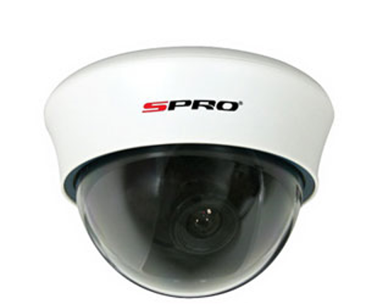
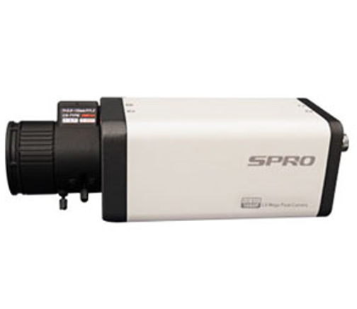
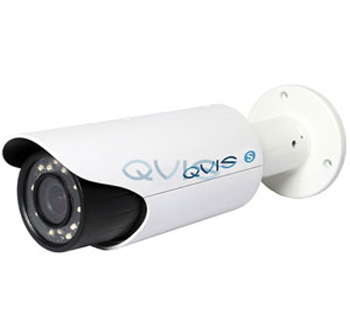
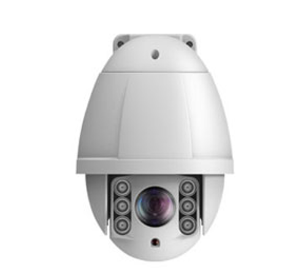
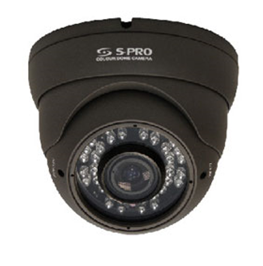
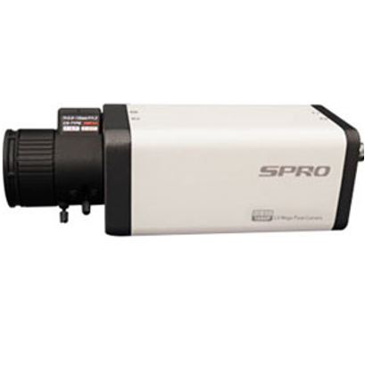
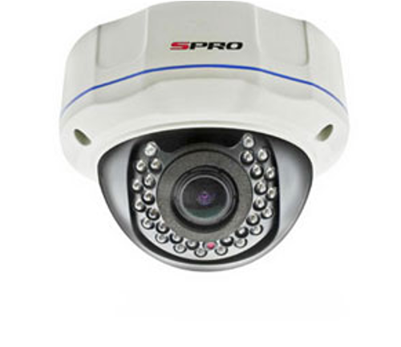

What Are the Different Types of CCTV Camera?
When it comes to securing your business, there are many different types of CCTV to choose from. Surveillance plays a huge part in today’s society, and with cameras all around us, our day-to-day lives are experiencing higher levels of security each day.
What many people don’t know, however, is that there are a variety of different types of CCTV camera which suit different situations or premises, and that selecting the proper camera for the right application really is vital.
 CCTV plays a huge part in today’s society, and with cameras all around us, our day-to-day lives are experiencing higher levels of security each day. What many people don’t know, however, is that there are a variety of different types of CCTV camera which suit different situations or
premises, and that selecting the proper camera for the right application really is vital. Here, we run through these types of camera and what makes them unique and more suitable for some venues over others.
CCTV plays a huge part in today’s society, and with cameras all around us, our day-to-day lives are experiencing higher levels of security each day. What many people don’t know, however, is that there are a variety of different types of CCTV camera which suit different situations or
premises, and that selecting the proper camera for the right application really is vital. Here, we run through these types of camera and what makes them unique and more suitable for some venues over others.
Types of CCTV
Here, we run through these types of camera and what makes them unique and more suitable for some venues over others.
What are the different types of CCTV cameras?
Dome Camera
Bullet Camera
C-mount Camera
Day/Night Camera
PTZ Camera
Dark Fighter Technology Cameras
These cameras can pick up coloured images in very low-light conditions. Dark fighter technology can be used in the day and night and offer optimal performance thanks to its wide range of capabilities. They are equipped with ½” CMOS progressive scan sensors which allows the device to pick up high-quality images and doesn’t require an extra light source – which makes the perfect night time security surveillance camera.
Other benefits of dark fighter technology cameras include:
Smart features: line crossing, audio and face detection
Can be used for a multitude of purposes
High definition
ANPR/LPR Cameras
ANPR and LPR cameras are used to read and store data on registration plates. They offer a simple and efficient solution to many organisations including tolling, hotel overstay management and the obvious: car parking. ANRP stands for Automatic Number Plate Recognition (LPR cameras stands for License plate cameras) and these devices help to obtain copious information in a high traffic area to keep any premises secure.
Other benefits of ANPR/LPR cameras include:
Smart features: information storage
Can identify cars that have been banned from a premises
Allows a business to run smoothly
Internal and External Dome Camera

The dome camera is one most commonly used for indoor and outdoor security and surveillance. The shape of the camera makes it difficult for onlookers to tell which way the camera is facing, which is a strong piece of design, deterring criminals by creating an air of uncertainty. Other benefits of this type of camera include:
Other benefits of internal and external dome cameras include:
Ease of installation
Vandal-resistant features
IR night vision
Bullet Camera
 Bullet cameras are long and cylindrical in shape and are ideal for outdoor use. Their strengths lie specifically in applications which require long distance viewing. Installed within protective casings, the cameras are shielded against dust, dirt and other natural elements. The cameras can easily be mounted with a mounting bracket, and come fitted with either fixed or varifocal lenses depending on the requirements of its intended application.
Other benefits of bullet cameras include:
IR night vision
Compact size aids installation
High-quality image resolution
Bullet cameras are long and cylindrical in shape and are ideal for outdoor use. Their strengths lie specifically in applications which require long distance viewing. Installed within protective casings, the cameras are shielded against dust, dirt and other natural elements. The cameras can easily be mounted with a mounting bracket, and come fitted with either fixed or varifocal lenses depending on the requirements of its intended application.
Other benefits of bullet cameras include:
IR night vision
Compact size aids installation
High-quality image resolution
C-mount Camera

Coming with detachable lenses, C-mount cameras allow for simple lens changes to fit different applications. C-mount cameras can cover distances beyond 40 ft thanks to the possibility to use special lenses with these cameras, whereas standard CCTV lenses can only cover distances of 35-40 ft.
Other benefits of C-mount cameras include:
Can support changes in technology
Effective for indoor use
Bulky size makes them noticeable (which acts as a deterrent)
Day/Night Camera

Capable of operating in both normal and poorly lit environments, these cameras benefit from not requiring inbuilt infrared illuminators as they can capture clear video images in the dark thanks to their extra sensitive imaging chips. For this reason, these cameras are ideal for outdoor surveillance applications in which IR cameras are unable to function optimally.
Other benefits of day/night cameras include:
Record in both colour and black & white.
Wide variety of sizes available
Infrared capability
PTZ Pan Tilt & Zoom Camera

PTZ – Pan/tilt/zoom – cameras allow the camera to be moved left or right (panning), up and down (tilting) and even allow the lens to be zoomed closer or farther. These cameras are used in situations where a live guard or surveillance specialist is there operating the security systems.
Other benefits of PTZ cameras include:
200m IR night vision
X36 optical zoom
High-quality image resolution
Discreet CCTV
These types of cameras allow for discreet placement which means you can capture good footage of theft and criminal damage. Discreet CCTV cameras beneficial because criminals will be less likely to spot them and therefore, they are less likely to be damaged in the process.
Other benefits of discreet CCTV cameras include:
Can be propped up or mounted
Can be disguised in various objects
Effective for indoor use
Thermal Image Cameras/Infrared Cameras

One of the best 24 hour surveillance cameras around providing airports, seaports, boards and many other critical infrastructures with quality images, no matter what time of day it is. Infrared cameras have small LEDs surrounding the lens to help pick up moving figures in pitch black. Thermal image cameras can see over long distances, up to 300 metres away!
Other benefits of infrared cameras include:
Detect intruders up 250-300 metres away
Good in low-light
Thermal radiation passes through visual barriers
Vorical Cameras

With the ability to zoom in and out without forfeiting its focus. Varifocal cameras allow you to adjust the focal length, the angle and increase or decrease the zoom – ideal for obtaining footage

Network Cameras
These cameras share the images across the internet, so CCTV footage can be easily accessed. Network cameras are ideal for both domestic and commercial purposes because you can see what’s going on whilst away from the property.
Other benefits of network cameras include:
Data can be easily accessed
Ideal for homes and companies
Less cabling and less maintenance
High Definition Cameras
High definition cameras have such a high resolution that they’re mainly used in high risk establishments such as banks and casinos. This is to capture a good image of anyone who enters and exits to maintain high security and maximum safety. These cameras are great for spotting misconduct and allows the user to zoom in for extra clarity, should the footage need to be used in court.
Other benefits of high definition cameras include:
Clear, detailed pictures
Offer maximum safety for high risk establishments
Can zoom in without losing focus
What Type of CCTV Camera Should I Buy?
It’s extremely important to ensure that you have chosen the right CCTV camera, because depending on where they’re positioned and their primary use, you will need to find one that best accommodates your needs.